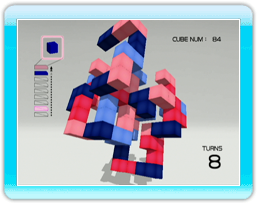
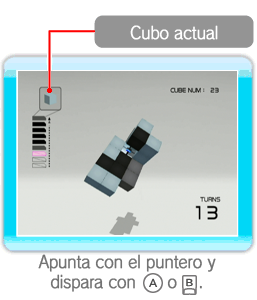
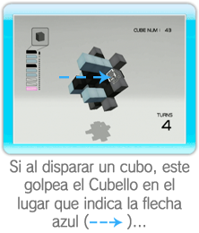
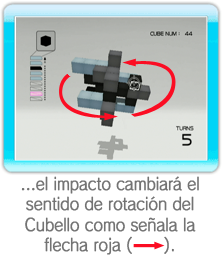
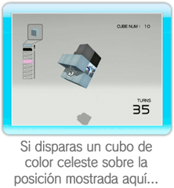
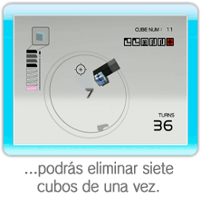

Dispara al Cubello los cubos almacenados en el cargador.
Cuando hayas eliminado todos los cubos que rodean el núcleo del Cubello, completarás el nivel.
Para eliminar cubos, tendrás que conectar cuatro o más del mismo color con el cubo que disparas.
Dependiendo del número de disparos que efectúes en un nivel, puede que se agreguen más cubos al Cubello.
● Cómo disparar y eliminar cubos

Apunta al lugar donde quieras lanzar el cubo y oprime

o

para disparar el siguiente cubo.
La rotación del Cubello variará en función del ángulo en el que impacte el cubo.
|  |
 |
 |
● Consejo para eliminar cubos
Al conectar cubos del mismo color podrás eliminar muchos cubos a la vez.
|  |
|
 |
● El cargador

Mientras tengas cubos en el cargador, podrás realizar disparos.
Por cada disparo realizado se eliminará un cubo del cargador.
Por cada cubo que elimines del Cubello, se agregarán tres cubos al cargador, hasta un máximo de diez.
Si el Cubello se acerca hasta golpear la pantalla, perderás tres cubos del cargador, así que ten cuidado.
● Fin del juego
Si te quedas sin cubos en el cargador antes de haber eliminado todos los cubos del Cubello, se terminará el juego.
● Menú del final de una fase

Siempre que se termine una fase, ya la hayas superado o no, aparecerá el siguiente menú con tus resultados.
RETRY
(reintentar)
|
Vuelve a jugar la fase.
|
SELECT LEVEL
(seleccionar nivel)
|
Vuelve a la pantalla de selección de nivel.
|
EXIT
(salir)
|
Volver a la pantalla de inicio (solo en ENDLESS).
|
Nota: Si completas por primera vez LEVEL A (nivel A),
también aparecerá NEXT LEVEL (siguiente nivel). Selecciona esta opción para pasar al siguiente nivel.